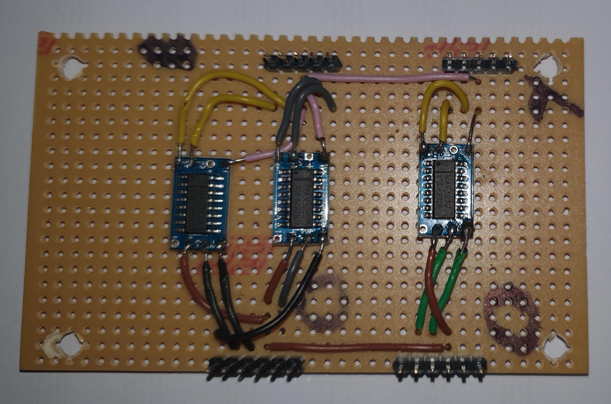
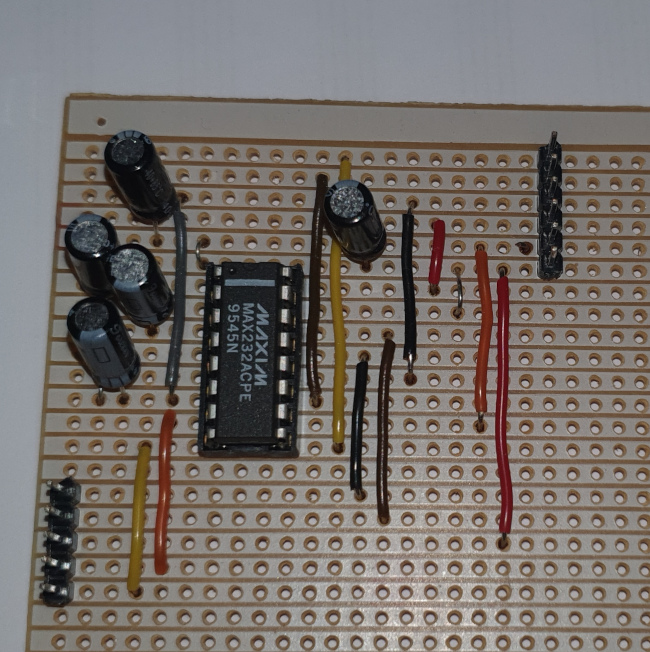
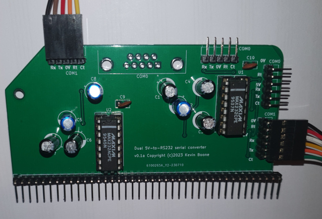
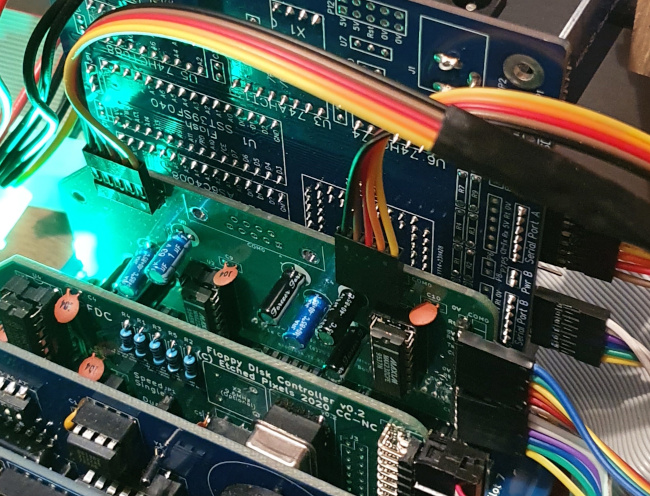

Designing a dual 5V-to-RS232 serial level converter for the RC2014
 This article in one of my series
Adventures with RC2014, Z80, and CP/M.
In it, I describe how I designed a dual 5V-to-RS232 level converter
board for the RC2014 bus. Such a board -- or something equivalent -- is
necessary if you want to connect real RS232 peripherals (printers, modems,
terminals), rather than using PC-based simulations of peripherals.
The RS232 standard is not based on 5V logic levels, but on +/- 12V.
This article in one of my series
Adventures with RC2014, Z80, and CP/M.
In it, I describe how I designed a dual 5V-to-RS232 level converter
board for the RC2014 bus. Such a board -- or something equivalent -- is
necessary if you want to connect real RS232 peripherals (printers, modems,
terminals), rather than using PC-based simulations of peripherals.
The RS232 standard is not based on 5V logic levels, but on +/- 12V.
It's possible to by 5V-to-RS232 converters from a number of sources, including online auction sites. These modules have several problems, for this application.
First, they tend to be single-channel. If you need two serial ports -- as I do -- then wiring and mounting the modules can get untidy.
Second, and more significantly, cheap RS232 converter modules usually don't support hardware handshaking (flow control). That's a big deal, when connecting devices of different speed. A Z80 CPU is not particular fast, by modern standards, but it's a heck of a lot faster than a 1980s serial printer. Hardware flow control is essential for some applications.
A more subtle problem is that there are various ways that an RS232 port can be wired. While these wiring schemes might all be legitimate, interfacing is difficult if you don't know exactly what wiring is in use. Very few of these inexpensive RS232 converter modules come with a circuit diagram.
My plan was eventually to design a PCB that would plug into the RC2014 backplane, next to the serial module or motherboard, and be connected to it by short cables. Then longer cables would connect the voltage converter PCB to proper RS232 sockets on the back panel of the enclosure. There's no compelling, functional need to plug the RS232 level converter into the backplane -- it doesn't use any of the backplane signals, and even the power supply comes from the connection to the serial hardware. But making it backplane-compatible provides for a neat construction, as there's no need to find a place to mount another board in the enclosure.
Complete design details, including Gerber files for PCB fabrication, are available in my GitHub repository.
RS232 refresher
If you're even reading this, you probably have some understanding of how RS232 works. However, there are some subtleties that aren't obvious.
RS232 defines a signalling protocol and a wiring scheme for connectors. There are two common connectors: the 9-pin DB9, and the 25-pin DB25. For reasons that must have made sense to somebody at some point, the wiring of the DB9 is not a strict subset of the wiring of the DB25. By that I mean that the functions of pins 1-9 in the DB25 are not the same as pins 1-9 in the DB9. In particular, the TX and RX pins are reversed.
What this means is that you need to be careful about interpreting published circuit designs for RS232 peripherals -- the wiring of the actual sockets might not be correct for your application. In addition, RS232 defines 'DTE wiring' and 'DCE wiring', for both the DB9 and the DB25 (and, sigh, they are different). Originally, the 'DTE' wiring scheme was used for computers and terminals, while the 'DCE' scheme was used for modems. The idea here was that the wiring between a computer or terminal and a modem would be 'straight'. That is, pin 1 to pin 1, pin 2 to pin 2, and so on. Of course, the 'transmit' connection of one end of the link must go to the 'receive' connection at the other and vice versa; but originally this signal handling was the job of the modem. To connect two DTE components, you'll need a 'null modem' cable, that swaps the RX/TX and corresponding handshaking connections.
RS232 defines a variety of hardware handshaking schemes, but the one that is (probably) most widely used is RTS/CTS. A component that wants to transmit asserts RTS ('request to send'). A component that has capacity to receive asserts CTS ('clear to send'). Conventionally, the modem (or the null modem cable) would swap RTS and CTS, to make a functional handshaking system with just these two signals.
The conventional wiring for a panel-mount DB9 DTE, which I have adopted in my construction, is as follows:
DB9 Pin Function 2 RX 3 TX 5 GND 7 RTS 8 CTS
A null modem cable, for connecting the RC2014 system to a terminal or printer, must swap pins 2/3, and pins 7/8. That's assuming the terminal has a DB9 connector, not a DB25. Sigh.
Serial interface chips designed for 8-bit computers, like the 8250, are already RS232-compatible in terms of the communication protocol. What's not compatible is the voltage level. RS232 requires -12V for a logic 1 and +12V for a logic 0.
Introducing the MAX232
The MAXIM MAX232 chip has been the staple of RS232 interfacing for nearly 30 years. It uses a 'charge pump' design to generate the +/- 12V levels for signalling. A complete design requires only five capacitors in addition to the IC. These capacitors are 'pumped' by an oscillator to generate voltages above or below the supply.
My first attempt at a voltage level converter was to use pre-fabricated MAX232 modules, which cost next to nothing and are widely available on eBay. These are so plentiful that they come on rolls. Each module is a single transceiver, that is, it handles a single receive/transmit conversation. So to use RTS/CTS handshaking, you'll need two modules -- one for RX/TX and one for RTS/CTS.
These modules are horrible to solder, and my first prototype looked like this:

Note that there are three modules, not four, because the SC130 board I'm using in my RC2014 design has no hardware handshaking on its second serial port (that's a limitation of the Z180 CPU). So there was no point wiring up a handshaking interface for both serial ports in the prototype.
Aside from the ugliness, this design did not work. Every so often, one of the MAX232 modules would suddenly overheat -- hot enough to melt solder. I traced these events down to unplugging the RS232 connection while the system is powered. That's something I can reasonably expect to happen, and fairly frequently, so the design has to be able to tolerate it.
I've since discovered that this overheating problem is common in these cheap modules. A common 'solution' is to put a small resistor in series with the power supply to the module, but this didn't work for me. Nor did pulling up or pulling down the various signal lines. These modules have the advantage of being very compact, because all the capacitors are surface-mounted onto the back of the module. However, space is not at a premium in my design, and this didn't really look like an avenue worth exploring further, given how flakey these cheap modules are.
Second prototype
My second prototype used discrete electrolytic capacitors on stripboard. The 16-pin DIP variant of the MAX232 is a dual transceiver, meaning that it can handle both RX/TX and CTS/RTS in one chip. Even with electrolytic capacitors, the design is compact enough that I see how I could get two instances of the circuit onto a PCB that would fit in a RC2014 backplane.

This prototype did not suffer any of the overheating of the first one, although I think it's advsiable to be careful where you get your MAX232 chips from. It's a popular device, and there are fakes on the market.
Something that caught me out -- both in the stripboard prototype and when designing the PCB -- is the polarity of the electrolytic capacitors. Because the charge pump generates voltages more negative than the supply voltage, some of the capacitors have their anodes (positive terminals) at 0V. This makes sense in this application, but isn't something seen very often.
Designing the PCB
I used Kicad 6 for drawing the schematic and laying out the PCB. For a design like this, there's no need to use anything more complex than a two-layer (front and back) PCB, and I have no idea how well Kicad handles more complex situations. The circuit schematic and PCB design are available in my GitHub repository, in Kicad format and PNG.
I confess that I haven't designed a PCB since the mid-80s, so getting to grips with Kicad was a bit of a struggle. What made this particular design tractable, even for a noob like me, is that all the components I needed to use had PCB footprints in the Kicad libraries. It's possible to create custom footprints, but it's a pain.
There are places where routing the PCB tracks on two layers was a little fiddly but, since I had already built a design on stripboard, I knew it was possible. With hinsight, I can see that there's enough room on the board to make the PCB tracks thicker, but so far this doesn't seem to be a problem.
Most PCB manufacturers accept PCB design files in Gerber format, which is something that Kicad can produce. However, the fabricator will usually have limits on things like track width, via hole size, pad separation, and so on. So it's worth deciding on a fabricator in advance, because these things are awkward to change when the layout has been done.
The conventional RC2014 module size -- about 50mm x 100mm -- was chosen by its original proponents in part because it would be cheap to fabricate PCBs that size. Right now, I'm sending my PCBs to JLCPCB for fabrication, because this company will make small production runs for reasonable cost. At the time of writing, it costs $5 including shipping to make five copies of the same board. This is amazing value for money -- it's is so cheap that it's almost worth skipping the stripboard prototyping stage completely, and going direct to PCB. However, the turn-around time at this price point is about six weeks (including shipping), so using PCBs for prototyping is only practicable if you're in no hurry.
This is what the finished board looks like.

The board fits neatly into the backplace of my RC2014 system although, of course, it does occupy one backplane slot, that can't be used for something more interesting. In the photo below, the connections on the top of the board go to RS232 sockets on the rear panel, while the side connections (on the right) are to the RC130 montherboard in the adjacent slot.
